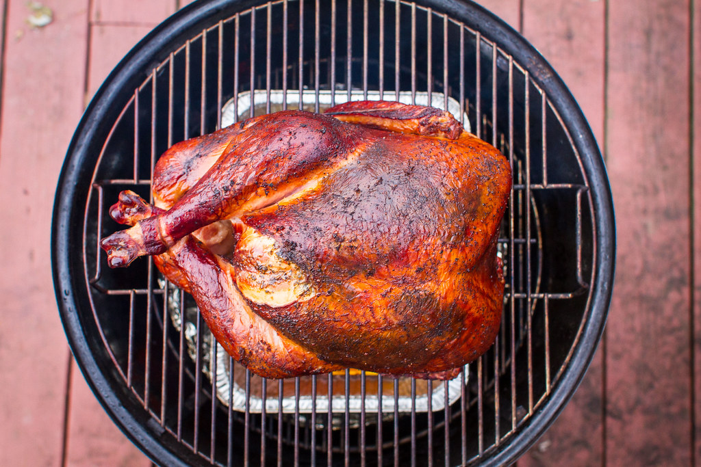

Home
Smoked Turkey

This smoked turkey recipe produces a juicy, tender bird with a rich hickory flavor that always impresses holiday guests. Cooking the turkey low and slow in a smoker ensures perfect results every time.
Ingredients:
- 1 (10 pound) whole turkey, neck and giblets removed
- 4 cloves garlic, crushed
- 2 tablespoons seasoned salt
- ½ cup butter
- 2 (12 fluid ounce) cans cola-flavored carbonated beverage
- 1 medium apple, quartered
- 1 medium onion, quartered
- 1 tablespoon garlic powder
- 1 tablespoon salt
- 1 tablespoon ground black pepper
- 2 cups hickory wood chips, or more as needed (Optional)
Steps:
- Preheat the smoker:
- Preheat a smoker to 225 to 250 °F (110 to 120 °C).
- Prepare the turkey:
- Pat the turkey dry thoroughly with paper towels—inside and out.
- Rub crushed garlic over the outside of the turkey, and sprinkle with seasoned salt. Transfer to a disposable roasting pan.
- Stuff the turkey:
- Fill the turkey cavity with butter, cola, apple, onion, garlic powder, salt, and pepper.
- Cover the turkey loosely with foil.
- Begin smoking:
- Add wood chips to the smoker according to the manufacturer’s directions.
- Place the roasting pan in the preheated smoker.
- Smoke the turkey, basting every 1‑2 hours with juices from the bottom of the roasting pan, for about 5 hours.
- Continue smoking until done:
- Add more wood chips if desired.
- Continue smoking and basting until the turkey is no longer pink at the bone and the juices run clear — about 4 to 5 more hours.
- Insert an instant‑read thermometer into the thickest part of the thigh, near the bone; it should read about 180 °F (80 °C).
- Remove from the smoker, tent loosely with foil, and let rest for 20 minutes before carving.